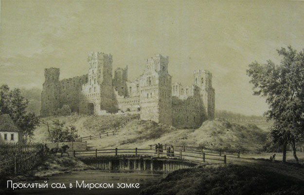

Мирский дворцово-замковый комплекс начали возводить магнаты Ильиничи еще в 1520-е гг. Особенно впечатляет его празднично-торжественное декоративное оформление, построенное на контрасте красного цвета стен и белых оштукатуренных ниш. Внешне похожие, все пять башен замка имеют индивидуальное решение.

В 1568 году замок перешел во владение Николая Радзивилла, который достроил его в стиле ренессанса.
Во время Наполеоновских войн замок серьезно пострадал и стоял в запустении более столетия.
Все еще находясь в руках богатой семьи Радзивиллов, он был восстановлен в начале XIX века и продан Николаю Святополк-Мирскому в 1895 году. Его сын начал восстановление замка, которое проходило под руководством архитектора Теодора Бурше.
Изначально замок строился как крепость для защиты от набегов крымских татар, поэтому представлял собой мощное сооружение. Были возведены пять башен, соединенных стенами, толщина которых у основания достигала трех метров. Все башни были спланированы как самостоятельные узлы обороны. Они возводились с таким расчетом, чтобы было удобно вести фланговый огонь вдоль стен и поражать цель на подступах к ним. Каждая башня высотой около 25 метров имела по пять боевых ярусов с бойницами и сложную систему внутренних переходов.
При князе Радзивилле замок был несколько перестроен: возведены новые жилые корпуса, перепланированы угловые башни, вокруг замка были насыпаны земляные укрепления, а за ними выкопан ров с водой.
В конце XVI в. бастионные укрепления Мирского замка потеряли свои ценность, поэтому он стал своего рода загородной резиденцией. В северной части замка был разбит сад в итальянском стиле, на юге было создано искусственное озеро.
|  |
Сегодня возле замка есть живописное рукотворное озеро. Но когда то там рос прекрасный яблоневый сад. Князь Николай Святополк-Мирский, тогдашний владелец имения в Мире, приказал выкопать озеро а сад вырубить. Была весна, деревья пышно цвели, по народному поверию большой грех рубить цветущие деревья, будет несчастье и проклятие, и отказались рубить сад. Терять время на народные приметы князь не хотел, а рубить сад нанял пришлых людей. Когда копали озеро не проходило и дня без несчастья, многие люди погибли, погиб на стройке и сын местной ведьмы, молодой парень. По легенде мать этого парня и прокляла озеро, «Пусть это озеро примет столько душ, сколько деревьев цвело в саду», таким было её напутствие. Так зародилась легенда о яблоневом саде. |
|
Самым любимым и почитаемым экскурсоводами, реставраторами и работниками музея привидением Мирского замка можно смело назвать призрак Белой Девы. Хотя «Девой» его называют скорее из вежливости или для красоты, ведь общепризнанно, что это неупокоенный дух первой жертвы проклятого озера – юной княгини Софьи Святополк-Мирской. Она утонула в возрасте 12 лет, и тогда ее куда чаще звали просто Сонечка. Так многие ласково называют привидение и сейчас. Призрак ведет себя скромно и никому не докучает, движется бесшумно и старается не попадаться людям на глаза. Так что видят ее не очень часто. Очевидцы утверждают, что выглядит она или как небольшое вертикально вытянутое белое облачко, или – если подойти поближе и вглядеться – как молодая полупрозрачная девушка, одетая в длинные белые одежды. Впрочем, рассмотреть ее во всех деталях никогда не удается – это привидение весьма застенчиво и, заметив людей, сразу же исчезает. Появляется Сонечка чаще всего или в надвратной башне, которую, к слову, тоже называют «белой», или рядом с фамильной усыпальницей, где была похоронена Софья Святополк-Мирская. Причем видят Белую Деву чаще всего весной или ранним летом, когда княжеские могилы затапливает талой водой. Может быть, в этом и причина ее беспокойства? Говорят также, что музейные работники много раз видели Сонечку уходящей по подземному ходу к Несвижскому замку. Считается, что Белая Дева может состоять в приятельских отношениях с другим известным привидением – Черной Панной Несвижской, так что неудивительно, что эти призраки ходят друг к другу в гости, а старинный тоннель используют, чтобы не шокировать людей своим поведением. |
|
Традиционная для Беларуси легенда о большом подземном ходе, даже не ходе а настоящей дороге, по которой свободно проезжала карета, запряжённая тройкой лошадей. Легенда повествует о таком подземном ходе между Мирским и Несвижским замком, его протяжённость превышает 30км. Эта же легенда говорит о спрятанных сокровищах Радзивилов, когда русские войска захватили Несвижский дворец, прогоняя Наполеона (для справки, Радзивилы, как и многие белорусские магнаты, тогда воевали на стороне Наполеона), слуги спрятали сокровища от разграбления и взорвали тоннель. Считается что в этом кладе присутствуют знаменитые 12 Радзивиловских апостолов. Исследования современными приборами и топографические работы по поиску подземного хода пока не дали никаких результатов. Поэтому красивая легенда пока так и остаётся легендой. |
|
В кладке южной стены вмонтирован камень, очень похожий на баранью голову, если смотреть в профиль. С этим камнем и связана легенда Мирского замка о бараньей голове, которая гласит, что если этот камень выпадет из кладки то дворец будет разрушен и не восстановится уже никогда. Можно попытаться объяснить назначение этого камня, он мог отображать святого ангца, любимого ягнёнка Авеля принесённая в жертву Богу ( христианская легенда ) в знак смирения, после чего на Авеля снизошёл божественный свет. Или же это мог быть магический языческий ритуал, согласно которому в начале строительства приносили в жертву животное, потом его голову высекали в камне и встраивали в стену, а призрак животного ходил вокруг строения и отгонял врагов (языческая легенда). А может это просто плод разыгравшегося воображения, так как в стенах вмуровано много камней и, если присмотреться, то во многих камнях можно проследить черты каких то животных. |